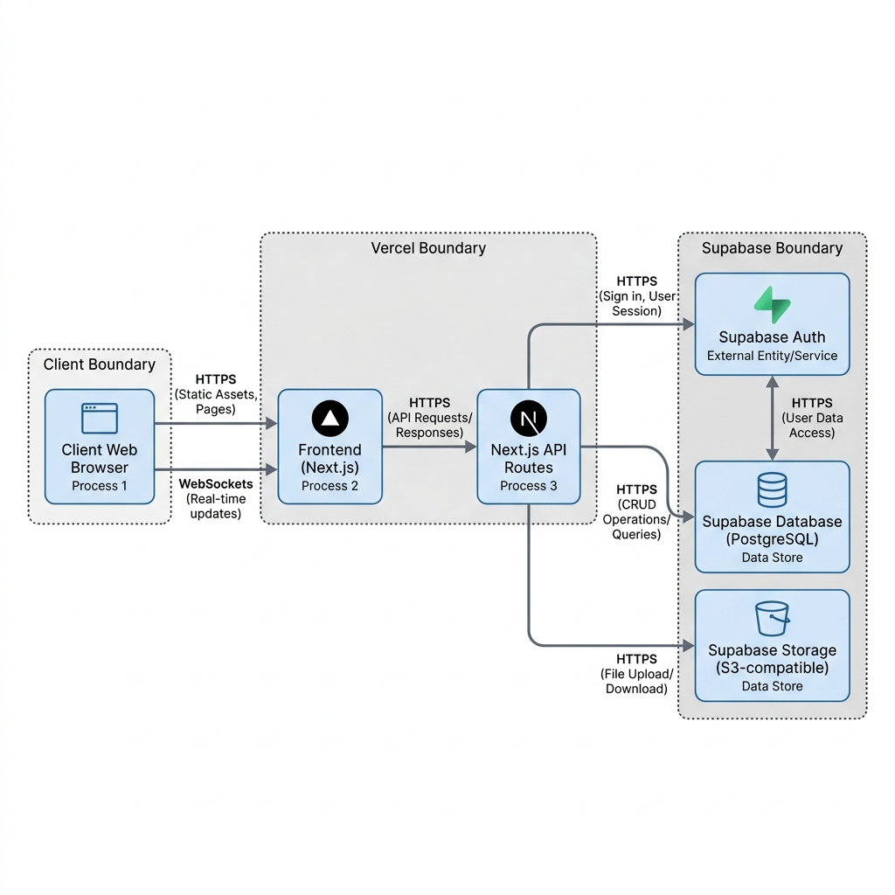

Modelado de Amenazas — Dev Seguro
Modelado de Amenazas con OWASP Threat Dragon
Modelado arquitectónico y análisis preventivo de riesgos de seguridad estructurado bajo la metodología STRIDE utilizando la suite Threat Dragon.
💡 ¿Qué es el Modelado de Amenazas y cómo se relaciona con SAST y DAST?
El Modelado de Amenazas es un proceso de diseño preventivo. En lugar de buscar fallos en la aplicación cuando ya está programada, se analiza el mapa o diseño lógico del sistema (arquitectura) para identificar de antemano qué podría fallar basándonos en cómo viajan los datos y dónde están las fronteras de seguridad (por ejemplo, entre el navegador del usuario y los servidores de Supabase).
1. DFD Lógico Completo de la Aplicación
El Data Flow Diagram (DFD) define de forma gráfica los procesos, los almacenes de datos, los actores externos y los límites de confianza (trust boundaries) que componen la topología lógica de la aplicación:

Captura: DFD lógico modelando límites del navegador, Vercel y Supabase.
Desglose de Componentes del DFD:
- Actores Externos: Usuario final interactuando desde el navegador web de cliente.
- Procesos Lógicos: Frontend Next.js y endpoints en la API (ambos alojados en Vercel) y los motores de Supabase Auth y Supabase API Gateway.
- Almacenes de Datos: Base de Datos PostgreSQL y Buckets de almacenamiento en Supabase.
- Límites de Confianza: Límitador de Cliente (Navegador), Límitador de Servidor (Vercel) y Límitador de Terceros (Supabase).
2. Análisis STRIDE y Modelado de Riesgos
Se mapearon y clasificaron las amenazas lógicas potenciales identificadas en los límites de confianza y tráficos de red HTTPS / WSS:

Captura: Matriz de vulnerabilidades STRIDE asociadas a los nodos de la topología.
| Amenaza STRIDE | Elemento Afectado | Mitigación Técnica Aplicada |
|---|---|---|
| Spoofing (Suplantación) | Supabase Auth / API | Uso estricto de autenticación multifactor (MFA), contraseñas robustas y validación de tokens JWT en el servidor. |
| Tampering (Alteración) | Flujo de datos HTTP / API | Canales cifrados TLS (HTTPS), cabecera nosniff, CSP explícita y sanitización estricta por escape de caracteres. |
| Repudiation (Repudio) | Logs de API y Base de Datos | Envío de trazas y logs unificados a Wazuh SIEM para monitorización y auditoría no modificable. |
| Information Disclosure (Fuga) | PostgreSQL DB / Storage | Políticas de seguridad a nivel de fila (RLS) en Supabase impidiendo el acceso a registros sin autenticar. |
| Denial of Service (DoS) | API Gateway en Supabase | Protección perimetral y balanceo nativo con CDN de Vercel y Cloudflare del backend. |
| Elevation of Privilege (Privilegios) | Next.js API / PostgreSQL RLS | Control de accesos estricto basado en roles (RBAC) y limitación de las variables de entorno. |
3. Entregables y Proyecto Threat Dragon
Puedes descargar o abrir el archivo del proyecto original de Threat Dragon en formato estructurado JSON para importarlo en tu herramienta de modelado o utilizarlo como evidencia adjunta del TFG:
Archivo de Proyecto Threat Dragon (JSON)
Proyecto listo para importar y renderizar en la web oficial.